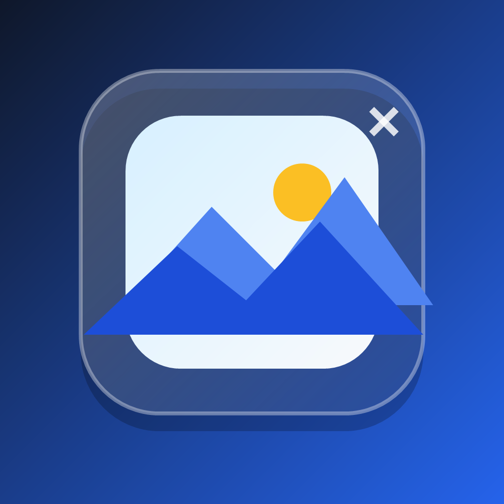
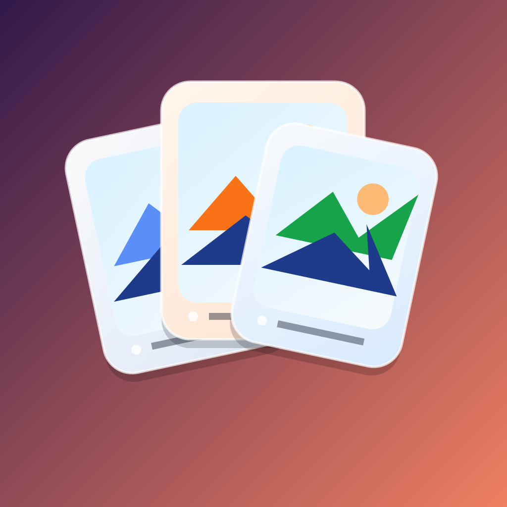
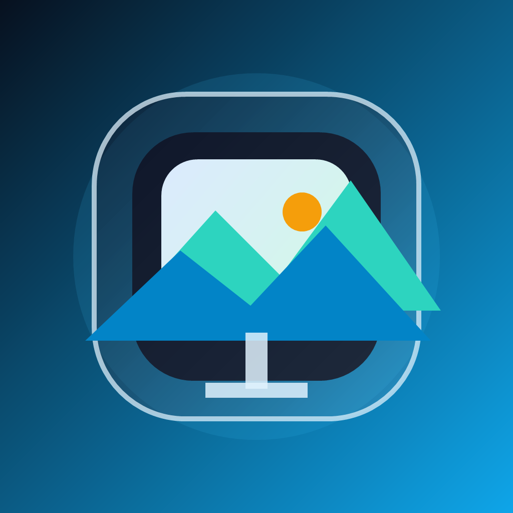

3案作成しました。番号で指定してもらえれば、その案を正式な assets/icon.png に反映します。

おすすめ写真フレーム感が最も素直に伝わる案です。青系で清潔感があり、ホーム画面でも見分けやすい方向です。

親しみやすい複数写真を扱うアプリらしさが強い案です。少しポップで、カジュアルな印象を出したいときに向いています。

モダンデジタルフォトフレーム感を強めた案です。落ち着きと先進感のバランスがあり、今回のUI改修とも相性が良いです。